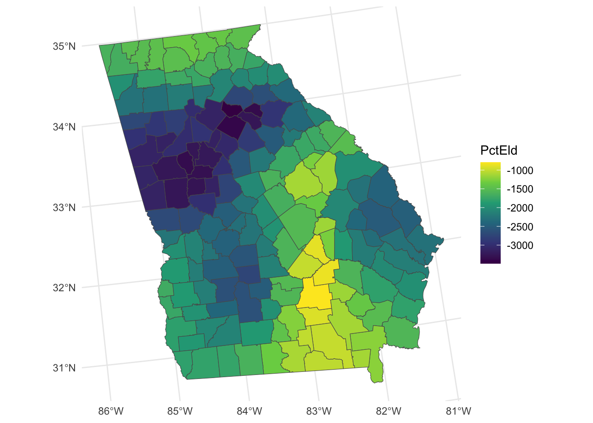
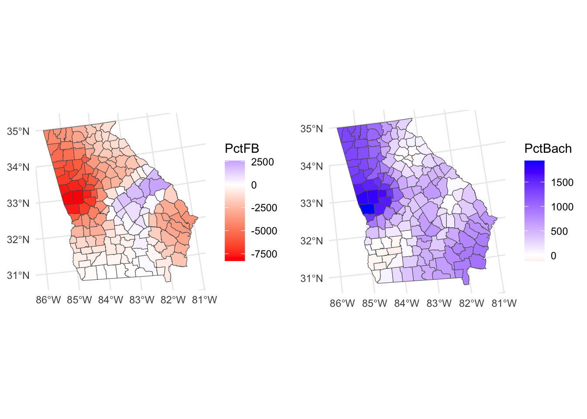
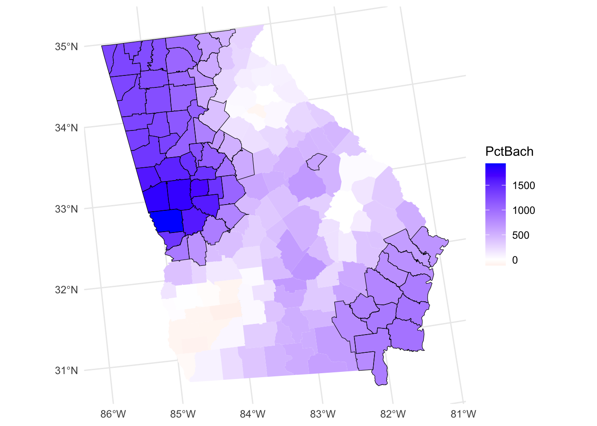
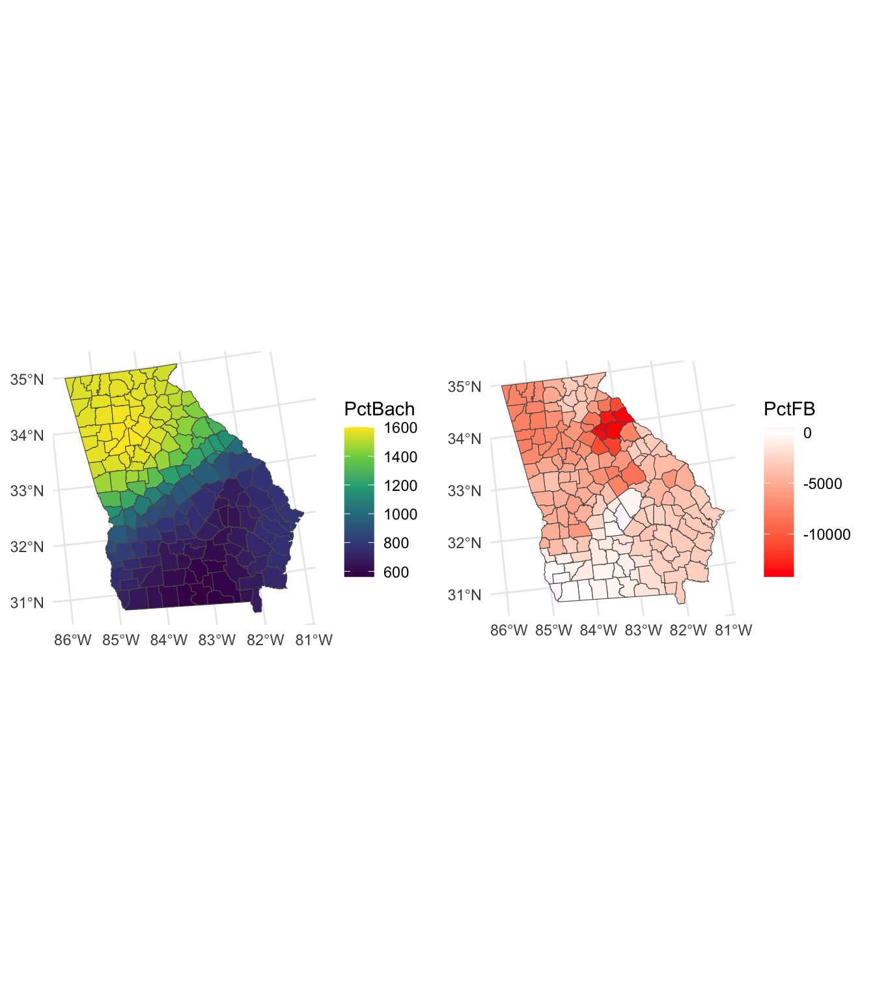
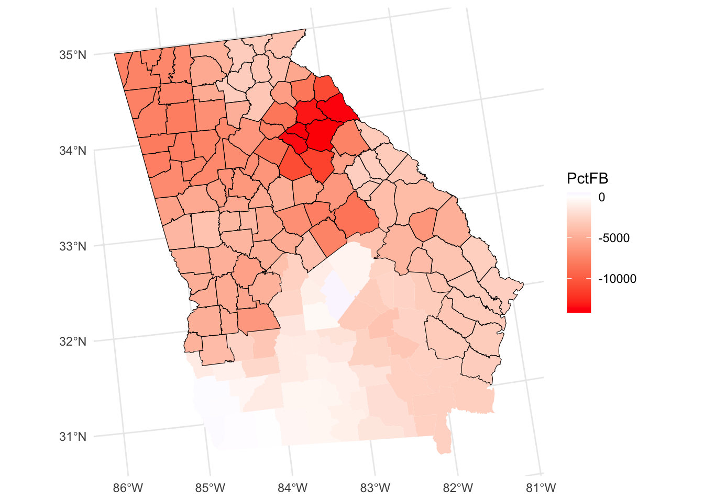
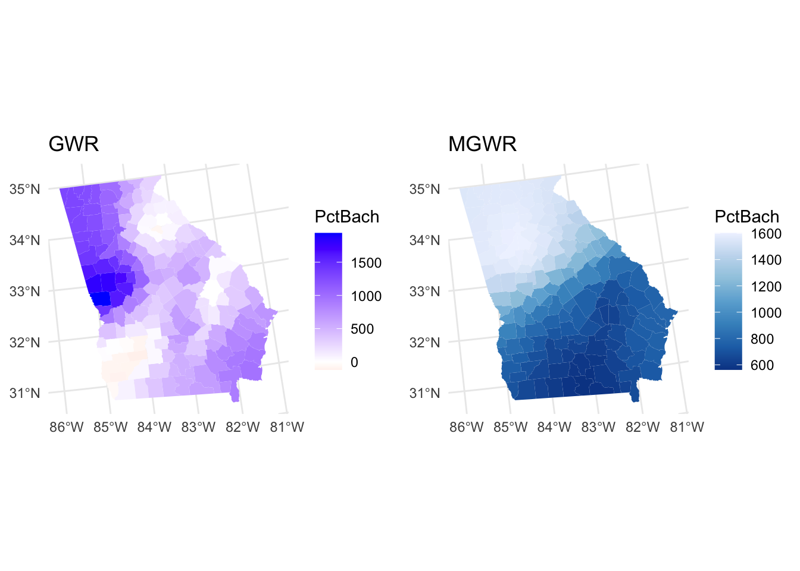
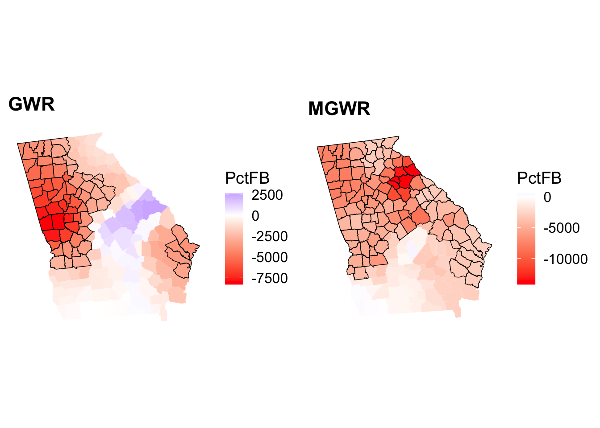
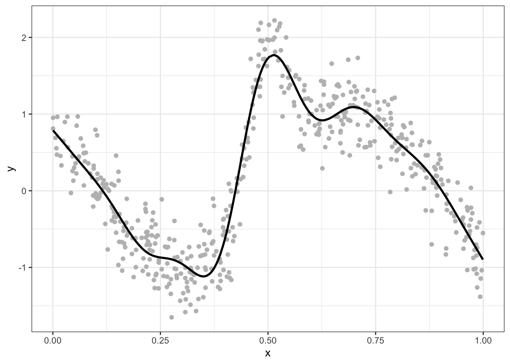
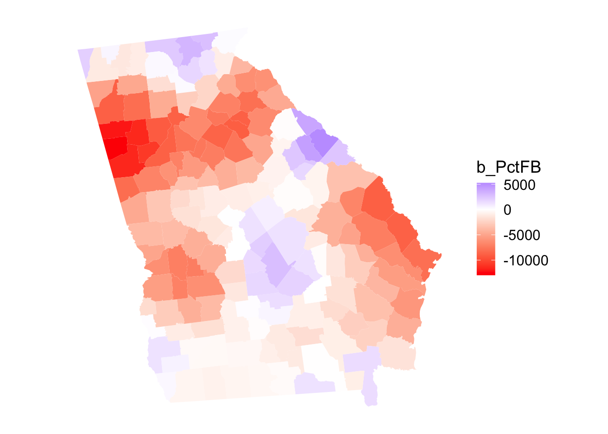

Unit 6 Spatial Varying Coefficient Models
Overview
This practical extends the regression models that you constructed in Week 4 to the spatial (special?) case, and particularly considers Spatially Varying Coefficient (SVC) models.
A coefficient, \(\beta\), in a regression model describe the relationship between a driver (\(x\), predictor variable) and an outcome (\(y\) the target variable). It describes how \(y\) changes with changes in \(x\). When examined locally, that relationship may vary with location for a number of reasons:
- a poor conceptual model
- social geography is not physics: laws do not govern behaviours, preferences, attitudes and sentiment
- bad measurements
- unaccounted for local factors
- OR process spatial heterogeneity (that is a process whose statistical relationships vary over space)
In the latter case, ‘whole map’ or global regression models such as the linear regressions in Week 4, may unreasonably assume relationship spatial stationarity. The basic idea behind SVC models is that the relationship between \(x\) and \(y\) may be *spatially non-stationary** (i.e. may vary in different in different locations).
A key advantage of SVCs is that they generate coefficient estimates for different locations in the study area, which can be mapped. The maps indicate how the relationship between an outcome ( \(y\) ) and factors ( \(x\)’s ) varies spatially.
This practical introduces Geographically Weighted Regression (GWR) Fotheringham et al. (2003) as an approach for handling spatially autocorrelated data. GWR is the SVC ‘brand leader’.
The first part of the practical undertakes a standard GWR and the second explores Multi-scale GWR (MGWR) Fotheringham et al. (2017). MGWR is now considered as the default GWR (Comber et al. 2023). The final optional section illustrates Generalised Additive Models with Gaussian Process splines. The latter are a recent advance (Comber et al. 2024) and are a faster and more precise alternative SVC to the GWR and able to handle a variety of response types (i.e. different distributions of \(y\) ).
Data and Packages
This session will again use the Georgia data that was used in Week 4 and will again construct a regression model of the median income variable (MedInc), but with slightly different set of predictor variables.
You will need the following packages
library(sf) # for spatial data
library(tidyverse) # for everything!
library(GWmodel) # to undertake the GWR
library(cowplot) # for plotting multiple graphicsAnd you will need to load the georgia data as in Week 4 which contains census data for the counties in Georgia, USA.
download.file("https://github.com/gwverse/gw/blob/main/data/georgia.rda?raw=True",
"./georgia.RData", mode = "wb")
load("georgia.RData")You should examine this in the usual way - you may want to practice your EDA and spatial EDA outside of the practical - and recall that this data has a number of County level variables including:
- % with college degree (
PctBach) - % elderly (
PctEld) - % foreign born (
PctFB) - median income of the county (
MedIncin dollars)
6.1 Local vs Global models
Recall that the classic OLS regression has the basic form of:
\[ y_i = \beta_{0} + \sum_{k=1}^{m}\beta_{k}x_{ik} + \epsilon_i \]
where for observations indexed by \(i=1 \dots n\), \(y_i\) is the response variable, \(x_{ik}\) is the value of the \(k^{th}\) predictor variable, \(m\) is the number of predictor variables, \(\beta_0\) is the intercept term, \(\beta_k\) is the regression coefficient for the \(k_{th}\) predictor variable and \(\epsilon_i\) is the random error term that is independently normally distributed with zero mean and common variance \(\sigma^2\). OLS is commonly used for model estimation in linear regression models.
And that this is specified using the function lm (linear model). The model we constructed in Week 5 is recreated here with the response variable \(y\) is median income (MedInc), and the 6 (i.e. \(k\)) socio-economic variables are PctBach, PctEld and PctFB are the different predictor variables, the \(k\) different \(x\)’s:
##
## Call:
## lm(formula = MedInc ~ PctBach + PctEld + PctFB, data = georgia)
##
## Residuals:
## Min 1Q Median 3Q Max
## -27979 -4789 -922 2712 34805
##
## Coefficients:
## Estimate Std. Error t value Pr(>|t|)
## (Intercept) 51566.1 3528.2 14.616 < 2e-16 ***
## PctBach 798.0 147.9 5.397 2.49e-07 ***
## PctEld -1789.0 231.2 -7.738 1.21e-12 ***
## PctFB -1902.0 691.4 -2.751 0.00665 **
## ---
## Signif. codes: 0 '***' 0.001 '**' 0.01 '*' 0.05 '.' 0.1 ' ' 1
##
## Residual standard error: 7672 on 155 degrees of freedom
## Multiple R-squared: 0.4771, Adjusted R-squared: 0.4669
## F-statistic: 47.13 on 3 and 155 DF, p-value: < 2.2e-16Recall also from Week 2 that we are interested in the following regression model properties:
- Significance indicated by the p-value in the column \(Pr(>|t|)\) as a measure of how statistically surprising the relationship is;
- The Coefficient Estimates (the \(\beta_{k}\) values) that describe how change in the \(x_k\) are related (linearly) to changes in \(y\);
- And the Model fit given by the \(R^2\) value, that tells us how well the model predicts \(y\).
All well and good. However the implicit assumptions in linear regression that the relationships between the various \(x\) terms and \(y\) are linear, that the error terms have identical and independent normal distributions and that the relationships between the \(x_k\)’s and \(y\) are the same everywhere, are quite often a consequence of wishful thinking, rather than a rigorously derived conclusion. To take a step closer to reality, it is a good idea to look beyond these assumptions to obtain more reliable predictions, or to gain a better theoretical understanding of the process being considered.
Regression models (and most other models) are aspatial and because they consider all of the data in the study area in one universal model, they are referred to as Global models. For example, the coefficient estimates of the model Median Income in Georgia assume that the contributions made by the different variables in predicting MedInc are the same across the study area. In reality this assumption of spatial invariance is violated in many instances when geographic phenomena are considered.
For example, the association between PctBach and MedInc, might be different in different places. This is a core concept for geographical data analysis, that of process spatial heterogeneity. That is, how and where processes, relationships, and other phenomena vary spatially, as introduced in Week 1 and reinforced in the lecture this week.
The standard OLS regression model (above) can be extended to a Spatially Varying Coefficient (SVC) model. The form is the same except that now location is included and a value for each regression coefficient is assigned to a location \((u,v)\) in space (e.g. \(u\) is an Easting and \(v\) a Northing), so that we denote it \(\beta_k(u,v)\):
\[ y = \beta_{0_(u_i, v_i)} + \sum_{m}^{k=1}\beta_{k}x_{ik_{(u_i, v_i)}} + \epsilon_{(u_i, v_i)} \]
In this session you will explore GWR approaches for solving this equation (and thereby for handling the impacts of any spatial dependencies in the error terms) and for quantifying process spatial heterogeneity using Geographically Weighted Regression
SVC approaches use relative location (i.e. distance between observations) and because degrees have different dimensions depending on where you are on the earth1, the data need to be converted to a Geographic projection. Here the the georgia data are transformed to a the EPSG 102003 USA Contiguous Albers Equal Area Conic projection.
6.2 Geographically Weighted Regression
6.2.1 Description
In overview, geographically weighted (GW) approaches use a moving window or kernel that passes through the study area. At each location being considered, data under the kernel are subsetted, weighted by their distance to the kernel centre and used to make a local calculation of some kind. In GWR this is a regression. In this way GW approaches construct a series of models at discrete locations rather than a single one for whole study area.
There are a number of options for the shape of the kernel - see page 6 in Gollini et al. (2015) - and the default is to use a bi-square kernel. This generates higher weights at locations very near to the kernel centre relative to those towards the edge.
The size or bandwidth of the kernel is critical as it determines the degree of smoothing and the scale over which the GWR operates. This can and should be optimally determined rather than just picking a bandwidth. An optimal bandwidth for GWR can be found by minimising a model fit diagnostic. Options include a leave-one-out cross-validation (CV) score which optimises model prediction accuracy and the Akaike Information Criterion (AIC) which optimises model parsimony - that is it trades off prediction accuracy with model complexity (number of variables used). Note also that the kernel can be defined as a fixed value (i.e. a distance), or in an adaptive way (i.e. with a specific number of nearby data points). Gollini et al. (2015) provide a description of this.
Thus there are 2 basic steps to any GW approach:
- Determine the optimal kernel bandwidth (i.e. how many data points to include in each local model or the kernel / window size);
- Fit the GW model.
6.2.2 Undertaking a GWR
These steps are undertaken in the code block below with an adaptive bandwidth, noting that georgia needs to be converted to an sp format data (the GWmodel package has not been updated to take sf format objects).
The bandwidth - the kernel size - is critical: it how many data points / observations are included in each local model. However, determining the optimal bandwidth requires different potential bandwidths to be evaluated, which in turn requires some measure of model fit to be applied. There are 2 options for this in a GWR (as indicated above):
- leave-one-out Cross Validation (CV). This essentially removes each observation one at a time for a potential bandwidth, and provides a measure of how well the local model with that bandwidth predicts the value of each removed data point;
- Akaike’s Information Criterion (AIC or corrected AIC, AICc). This provides a measure of model parsimony, a kind of balance between model accuracy and model complexity. A parsimonious model is one that has a explanatory power but is as simple as possible.
In determining the optimal GWR bandwidth, AIC is preferred to CV because it reflects model parsimony and its use tends to avoid over-fitting GWR models (thus AIC bandwidths tend to be larger than bandwidths found using CV).
The GWmodel package (Lu et al. 2014) has tools for determining the optimal GWR bandwidth. Note the the data can be in sp of sf formats - here georgia in sf format as in previous practicals:
# determine the kernel bandwidth
bw <- bw.gwr(MedInc~ PctBach + PctEld + PctFB,
approach = "AIC",
adaptive = T,
data=georgia) You should have a look at the bandwidth: it is an adaptive bandwidth (kernel size) indicating that its size varies but the nearest 48 observations will be used to compute each local weighted regression. Here it, has a value of 48 indicating that 30% of the county data will be used in each local calculation (there are 159 records in the data):
## [1] 48Try running the below to see the fixed distance bandwidth
# determine the kernel bandwidth
bw2 <- bw.gwr(MedInc~ PctBach + PctEld + PctFB,
approach = "AIC",
adaptive = F,
data=georgia)
bw2This indicates a fixed bandwidth of ~130km. For comparison the distances between each of the counties is summarised below, suggesting that 130km is about 25% of the maximum distance:
## Min. 1st Qu. Median Mean 3rd Qu. Max.
## 0 85620 156531 166238 237457 517837You should now create the GWR model with adaptive bandwidth stored in bw, and have a look at the outputs:
# fit the GWR model
m.gwr <- gwr.basic(MedInc~ PctBach + PctEld + PctFB,
adaptive = T,
data = georgia,
bw = bw)
m.gwr## ***********************************************************************
## * Package GWmodel *
## ***********************************************************************
## Program starts at: 2026-09-20 09:26:10.370536
## Call:
## gwr.basic(formula = MedInc ~ PctBach + PctEld + PctFB, data = georgia,
## bw = bw, adaptive = T)
##
## Dependent (y) variable: MedInc
## Independent variables: PctBach PctEld PctFB
## Number of data points: 159
## ***********************************************************************
## * Results of Global Regression *
## ***********************************************************************
##
## Call:
## lm(formula = formula, data = data)
##
## Residuals:
## Min 1Q Median 3Q Max
## -27979 -4789 -922 2712 34805
##
## Coefficients:
## Estimate Std. Error t value Pr(>|t|)
## (Intercept) 51566.1 3528.2 14.616 < 2e-16 ***
## PctBach 798.0 147.9 5.397 2.49e-07 ***
## PctEld -1789.0 231.2 -7.738 1.21e-12 ***
## PctFB -1902.0 691.4 -2.751 0.00665 **
##
## ---Significance stars
## Signif. codes: 0 '***' 0.001 '**' 0.01 '*' 0.05 '.' 0.1 ' ' 1
## Residual standard error: 7672 on 155 degrees of freedom
## Multiple R-squared: 0.4771
## Adjusted R-squared: 0.4669
## F-statistic: 47.13 on 3 and 155 DF, p-value: < 2.2e-16
## ***Extra Diagnostic information
## Residual sum of squares: 9123479259
## Sigma(hat): 7623.079
## AIC: 3301.791
## AICc: 3302.183
## BIC: 3183.48
## ***********************************************************************
## * Results of Geographically Weighted Regression *
## ***********************************************************************
##
## *********************Model calibration information*********************
## Kernel function: bisquare
## Adaptive bandwidth: 48 (number of nearest neighbours)
## Regression points: the same locations as observations are used.
## Distance metric: Euclidean distance metric is used.
##
## ****************Summary of GWR coefficient estimates:******************
## Min. 1st Qu. Median 3rd Qu. Max.
## Intercept 36563.48 51275.92 57837.02 65500.51 87342.20
## PctBach -117.35 248.02 493.77 892.79 1937.80
## PctEld -3491.73 -2512.30 -2049.24 -1605.11 -793.53
## PctFB -8282.45 -3704.42 -1873.14 -408.21 2581.19
## ************************Diagnostic information*************************
## Number of data points: 159
## Effective number of parameters (2trace(S) - trace(S'S)): 39.54086
## Effective degrees of freedom (n-2trace(S) + trace(S'S)): 119.4591
## AICc (GWR book, Fotheringham, et al. 2002, p. 61, eq 2.33): 3228.437
## AIC (GWR book, Fotheringham, et al. 2002,GWR p. 96, eq. 4.22): 3178.963
## BIC (GWR book, Fotheringham, et al. 2002,GWR p. 61, eq. 2.34): 3145.556
## Residual sum of squares: 3695485799
## R-square value: 0.7881832
## Adjusted R-square value: 0.7174802
##
## ***********************************************************************
## Program stops at: 2026-09-20 09:26:10.380996The printout gives quite a lot of information: the standard OLS regression model, a summary of the GWR coefficients and a whole range of fit measures (\(R^2\), AIC, BIC).
6.2.3 Evaluating the results
The code above prints out the whole model summary. You should compare the summary of the local (i.e. spatially varying) GWR coefficient estimates with the global (i.e. fixed) outputs of the ordinary regression coefficient estimates. Note the first line of code below. The output of the GWR model has lots of information including a slot called SDF or spatial data frame and this is an sp format object.
## [1] "GW.arguments" "GW.diagnostic" "lm" "SDF" "timings"
## [6] "this.call" "Ftests"Have a look at the SDF (a spatial object in sp format) and notice the use of @data to access the data table in the code below (it contains lots of information). The code below also extracts the coefficients from the OLS model:
head(m.gwr$SDF)
# the GWR betas (in the first 4 columns)
summary(m.gwr$SDF[, 1:4])
# the OLS coefficients
coef(m.gwr$lm)So the object returned by the MGWR function has the MGWR coefficient estimates in the SDF of the GWmodel output which insf format, and the global OLS coefficients are in the lm of the output.
# get a summary of the GWR coefficients
coefs_gwr = apply(m.gwr$SDF |> st_drop_geometry() |> select( Intercept:PctFB),
2,
summary)
# link to bandwidths and create a table
tab.gwr = data.frame(t(coefs_gwr), coef(m.gwr$lm))
# rename 2nd and 5th columns
names(tab.gwr)[c(2,5, 7)] = c("Q1", "Q3", "Global.Coef")
# have a look (to 1 significant figure)!
round(tab.gwr, 1)You could write this out to a csv file for inclusion in a report or similar as in the GWR coefficient example above.
| Min. | Q1 | Median | Mean | Q3 | Max. | Global.Coef | |
|---|---|---|---|---|---|---|---|
| Intercept | 36563.5 | 51275.9 | 57837.0 | 57684.2 | 65500.5 | 87342.2 | 51566.1 |
| PctBach | -117.4 | 248.0 | 493.8 | 597.2 | 892.8 | 1937.8 | 798.0 |
| PctEld | -3491.7 | -2512.3 | -2049.2 | -2095.0 | -1605.1 | -793.5 | -1789.0 |
| PctFB | -8282.4 | -3704.4 | -1873.1 | -2260.0 | -408.2 | 2581.2 | -1902.0 |
So the Global coefficient estimates are similar to the Mean and Median values of the GWR output. But you can see the variation in the association between median income (MedInc) and the different coefficient estimates.
So for example, for PctBach (with degrees) :
- the global coefficient estimate is 798.
- the local coefficient estimate varies from 248 to 892.8 between the 1st and 3rd quartiles.
6.2.4 Mapping GWR outputs
The variation in the GWR coefficient estimates can be mapped to show how different factors are varying associated with Median Income in different parts of Georgia. Recall that these are held in the SDF of the GWmodel output which is insf format. It is extracted in the code below.
There is lots of information in the GWR output, but here we are interested in are the coefficient estimates and the t-values whose names are the same as the inputs (and the t-values with _TV).
The code below creates maps where large variation in the relationship between the predictor variable and median income was found as in the figure below:

Figure 6.1: Maps of the GWR coefficient estimates.
It is also possible to create maps showing coefficients whose values flip from positive to negative in different parts of the state.
# PctFB
p1 = ggplot(gwr_sf) +
geom_sf(aes(fill = PctFB)) +
scale_fill_gradient2(low = "red", high = "blue") +
theme_minimal()
# PctBach
p2 = ggplot(gwr_sf) +
geom_sf(aes(fill = PctBach)) +
scale_fill_gradient2(low = "red", high = "blue") +
theme_minimal()
plot_grid(p1, p2, ncol = 2)
Figure 6.2: Maps of GWR coefficient estimates, whose values flip from positive to negative.
So what we see here are the local variations in the degree to which changes in different variables are associated with changes in Median Income. The maps above are not maps of the predictor variables (PctBach, PctPov and PctBlack). Rather, they show how the relationships between the inputs and Median Income vary spatially - the spatially vary strength of the relationships,
Now a critical aspect is that coefficient significance through the p-value is now local rather than a global statistic. Here we need to go into the t-values from which p-values are derived2. Significant coefficient estimates are those whose t-values are less than -1.96 or greater than +1.96. It possible to identify and map these locations from the GWR outputs which have the t-values (_TV) for each input variable.
The code below recreates one of the maps above maps but highlights areas where PctBach is a significant predictor of MedInc (see figure below). It shows that coefficients are highly localized.
# determine which are significant
tval = gwr_sf |>dplyr::select(all_of("PctBach_TV")) |> st_drop_geometry()
signif = tval < -1.96 | tval > 1.96
# map the counties
ggplot(gwr_sf) +
geom_sf(aes(fill = PctBach), col = NA) +
scale_fill_gradient2(low = "red", high = "blue") +
theme_minimal() +
# now add the tvalues layer
geom_sf(data = gwr_sf[signif,], fill = NA, col = "black")
Figure 6.3: A map of the spatial variation of the PctBach coefficient estimate, with significant areas highlighted.
6.2.5 GWR Summary
GWR investigates if and how relationships between response and predictor variables vary geographically. It is underpinned by the idea that whole map (constant coefficient) regressions such as those estimated by ordinary least squares may make unreasonable assumptions about the stationarity of the regression coefficients under investigation. Such approaches may wrongly assume that regression relationships (between predictor and target variables) are the same throughout the study area.
GWR outputs provides measures of process heterogeneity – geographical variation in data relationships – through the generation of mappable and varying regression coefficients, and associated statistical inference. It has been extensively applied in a wide variety of scientific and socio-scientific disciplines.
There are a number of things to note about GWR:
It reflects a desire to shift away from global, whole map (Openshaw 1996) and one-size-fits-all statistics, towards approaches that capture local process heterogeneity. This was articulated by Goodchild’s (2004) who proposed a 2nd law of geography: the principle of spatial heterogeneity or non-stationarity, noting the lack of a concept of an average place on the Earth’s surface comparable, for example, to the concept of an average human (Goodchild 2004).
There have been a number of criticisms of GWR (see Section 7.6 in Gollini et al. (2015)).
There have been a number of advances to standard GWR notably Multi-Scale which is now considered to be the default GWR. These have all been summarised in a GWR Route map paper (Comber et al. 2023).
Consideration of developments and limitations will be useful for your assignment write up.
Task 1
Create a function for creating a ggplot of coefficients held in an sf polygon object, whose values flip, highlighting significant observations. Note that functions are defined in the following way:
my_function_name = function(parameter1, paramter2) { # note the curly brackets
# code to do stuff
# values to return
}A very simple example is below. This simply takes variable name from an sf object, creates a vector of values and returns the median and the mean:
median_mean_from_sf = function(x, var_name) {
# do stuff
x = x |> dplyr::select(all_of(var_name)) |> st_drop_geometry() |> unlist()
mean_x = mean(x, na.rm = T)
median_x = median(x, na.rm = T)
# values to return
return(c(Mean = mean_x, Median = median_x))
}
# test it
median_mean_from_sf(x = georgia, var_name = "MedInc")## Mean Median
## 37147.09 34307.00You should be able to use the code that was used to generate the plot above for the do stuff bit:
# determine which are significant
tval = gwr_sf |> dplyr::select(all_of("PctBach_TV")) |> st_drop_geometry()
signif = tval < -1.96 | tval > 1.96
# map the counties
ggplot(gwr_sf) +
geom_sf(aes(fill = PctBach), col = NA) +
scale_fill_gradient2(low = "red", high = "blue") +
theme_minimal() +
# now add the tvalues layer
geom_sf(data = gwr_sf[signif,], fill = NA, col = "black")NB You are advised to attempt the tasks after the timetabled practical session. Worked answers are provided in the last section of the worksheet.
6.3 Multi-scale GWR
6.3.1 Description
In a standard GWR only a single bandwidth is determined and applied to each predictor variable. In reality some relationships in spatially heterogeneous processes may operate over larger scales than others>f this is the case the best-on-average scale of relationship non-stationarity determined by a standard GWR may under- or over-estimate the scale of individual predictor-to-response relationships.
To address this, Multi-scale GWR (MGWR) can be used (Yang 2014; Fotheringham et al. 2017; Oshan et al. 2019). It determines a bandwidth for each predictor variable individually, thereby allowing individual response-to-predictor variable relationships to vary. The individual bandwidths provide insight into the scales of relationships between response and predictor variables, allowing for local to global bandwidths. Recent work has suggested that MGWR should be the default GWR (Comber et al. 2023), with a standard GWR only being used in specific circumstances.
6.3.2 Undertaking a MGWR
A MGWR implementation in GWmodel is undertaken in 2 stages: first the bandwidths are found and then they are used to create the final model. Note both stages use the same function, gwr.multiscale but with different arguments passed to it.
The code below undertakes illustrates the search for the optimal bandwidths, and then having found them passes into a second MGWR operation. These will generate a lot of text to your screen!
gw.ms <- gwr.multiscale(MedInc~ PctBach + PctEld + PctFB,
data = georgia,
adaptive = T,
max.iterations = 1000,
kernel = "bisquare",
bws0=c(100,100,100),
predictor.centered=rep(FALSE, 3))We can examine the bandwidths for the individual predictor variables:
## [1] 80 53 157 18These provide indication of the spatial variation (localness) of the scale of each predictor-to-response relationship. Recall that there are 159 counties in Georgia and in that context the adaptive bandwidths printed out above indicate these scales:
## [1] 0.5031447 0.3333333 0.9874214 0.1132075Consider the MGWR model above: a number of parameters were specified:
## DO NOT RUN THIS! ##
gw.ms <- gwr.multiscale(MedInc~ PctBach + PctEld + PctFB, # the formula
data = georgia, # the data
adaptive = T, # the GWR kernel type (distance or nearest neighbours)
max.iterations = 1000, # the number of iterations that it will seek convergence for
kernel = "bisquare", # the kernel shape
bws0=c(100,100,100), # an initial set of values for the bandwidths
predictor.centered=rep(FALSE, 3)) # whether to centre the predictors (quicker for bigger problems)You should have a look at the help for this function for full explanations and other parameters at some point (like if you were doing an assignment based on this!)
6.3.3 Evaluating the results
The coefficient estimate spatial variation can be examined (hint: have a look at what is returned by names(gw.ms):
# get a summary of the MGWR coefficients
coefs_mgwr = apply(gw.ms$SDF |> st_drop_geometry() |> select( Intercept:PctFB),
2,
summary)
# link to bandwidths and create a table
tab.mgwr = data.frame(Bandwidth = bws,
t(round(coefs_mgwr,1)))
# rename 3rd and 6th columns
names(tab.mgwr)[c(3,6)] = c("Q1", "Q3")
# have a look!
tab.mgwr| Bandwidth | Min. | Q1 | Median | Mean | Q3 | Max. | |
|---|---|---|---|---|---|---|---|
| Intercept | 80 | 52701.9 | 53320.6 | 54451.8 | 55197.4 | 57567.7 | 58229.0 |
| PctBach | 53 | 562.9 | 718.9 | 1011.9 | 1092.0 | 1536.1 | 1601.1 |
| PctEld | 157 | -2161.5 | -2158.7 | -2152.8 | -2149.8 | -2140.2 | -2132.9 |
| PctFB | 18 | -14197.2 | -6336.7 | -4054.0 | -4525.3 | -2738.2 | 481.7 |
You should examine these, particularly the degree to which the coefficient estimates vary in relation to their bandwidths. Notice that smaller bandwidths (a smaller moving window) results in greater variation and this reduces as the bandwidths tend towards the global (recall that there are \(n = 159\) observations in the georgia data). So some of the bandwidths indicate highly local relationships with the target variable, while other are highly global, with bandwidths approaching \(n = all\).
Notice the coefficients and the degree to which vary, alongside the bandwidths - high bandwidths of course result in less variation in the coefficient estimates.
These tell us something about the local-ness of the interactions of different covariates with the target variable MedInc. For example, PctFB, has a small, highly local bandwidth, using few data points in each local regression. Whilst PctEld has a global relationship with MedInc and nearly all of the data points are used in each local regression model. The Intercept and `PctBach are somewhere in between with moderate local variation in the relationships with median income.
Note for example that the standard GWR PctFB flipped from negative to positive and here it is negative potentially because of the more localised bandwidths (recall that the standard GWR model had a bandwidth of 48).
As before, you could write this out to a csv file for inclusion in a report or similar as in the GWR coefficient example above. And the coefficients can be mapped. To a degree there is no point in mapping the coefficients whose bandwidths tend towards the global (i.e. are close to \(n\)), but the others are potentially interesting.
Again these are held in the SDF of the GWmodel output which is in sf format:
6.3.4 Mapping MGWR outputs
The code below creates the maps for the local covariates in the same way as before
# coefficients that are all of the same sign
p1 =
ggplot(mgwr_sf) +
geom_sf(aes(fill = PctBach)) +
scale_fill_viridis_c() +
theme_minimal()
# coefficients whose values flip
p2 =
ggplot(mgwr_sf) +
geom_sf(aes(fill = PctFB)) +
scale_fill_gradient2(low = "red", high = "blue") +
theme_minimal()
plot_grid(p1, p2, ncol = 2)
Figure 6.4: Maps of the MGWR coefficient estimates.
You may have noticed that t-values are also included in the outputs and gain significant areas can be identified and highlighted. This suggests a different spatial extent to that indicated by a standard GWR.
# determine which are significant
tval = mgwr_sf$PctFB_TV
signif = tval < -1.96 | tval > 1.96
ggplot(mgwr_sf) +
geom_sf(aes(fill = PctFB), col = NA) +
scale_fill_gradient2(low = "red", high = "blue") +
theme_minimal() +
# now add the tvalues layer
geom_sf(data = mgwr_sf[signif,], fill = NA, col = "black")
Figure 6.5: A map of the spatial variation of the PctFB coefficient estimate arising from a MGWR, with significant areas highlighted.
6.3.5 Comparing GWR and MGWR
It is instructive to compare the GWR and MGR outputs, both in terms of the numeric distributions and the spatial ones. The inter-quartile ranges of the numeric distributions give an idea about the different spatial variations and we can examine these with respect to the global coefficient estimates from the OLS model and the MGWR bandwidths:
## (Intercept) PctBach PctEld PctFB
## 51566.0950 798.0094 -1788.9654 -1901.9645## Intercept PctBach PctEld PctFB
## Min. 36563.5 -117.4 -3491.7 -8282.4
## 1st Qu. 51275.9 248.0 -2512.3 -3704.4
## Median 57837.0 493.8 -2049.2 -1873.1
## Mean 57684.2 597.2 -2095.0 -2260.0
## 3rd Qu. 65500.5 892.8 -1605.1 -408.2
## Max. 87342.2 1937.8 -793.5 2581.2## Intercept PctBach PctEld PctFB
## Min. 52701.9 562.9 -2161.5 -14197.2
## 1st Qu. 53320.6 718.9 -2158.7 -6336.7
## Median 54451.8 1011.9 -2152.8 -4054.0
## Mean 55197.4 1092.0 -2149.8 -4525.3
## 3rd Qu. 57567.7 1536.1 -2140.2 -2738.2
## Max. 58229.0 1601.1 -2132.9 481.7The maps similarly may show large differences in both the value of the coefficient estimates (see the figure below) in different places but also the significant areas (see the second figure).
# gwr
p3 =
ggplot(gwr_sf) +
geom_sf(aes(fill = PctBach), col = NA) +
scale_fill_gradient2(low = "red", high = "blue") +
theme_minimal() + labs(title = "GWR")
# mgwr - recall the coefficients are all the same sign
p4 =
ggplot(mgwr_sf) +
geom_sf(aes(fill = PctBach), col = NA) +
scale_fill_distiller(palette = "Blues") +
theme_minimal() + labs(title = "MGWR")
plot_grid(p3, p4, ncol = 2)
Figure 6.6: Maps of the coefficients arising from a GWR and MGWR.
# gwr
tval = gwr_sf$PctFB_TV
signif = tval < -1.96 | tval > 1.96
p5 =
ggplot(gwr_sf) +
geom_sf(aes(fill = PctFB), col = NA) +
scale_fill_gradient2(low = "red", high = "blue") +
theme_map() + labs(title = "GWR") +
# now add the tvalues layer
geom_sf(data = gwr_sf[signif,], fill = NA, col = "black")
# mgwr
tval = mgwr_sf$PctFB_TV
signif = tval < -1.96 | tval > 1.96
p6 =
ggplot(mgwr_sf) +
geom_sf(aes(fill = PctFB), col = NA) +
scale_fill_gradient2(low = "red", high = "blue") +
theme_map() + labs(title = "MGWR") +
# now add the tvalues layer
geom_sf(data = mgwr_sf[signif,], fill = NA, col = "black")
plot_grid(p5, p6, ncol = 2)
Figure 6.7: Maps of the significant coefficients arising from a GWR and MGWR.
6.3.6 MGWR Summary
A single bandwidth is used in standard GWR under the assumption that the response-to-predictor relationships operate over the same scales for all of the variables contained in the model. This may be unrealistic because some relationships can operate at larger scales and others at smaller ones. A standard GWR will nullify these differences and find a best-on-average scale of relationship non-stationarity (geographical variation), as described through the bandwidth.
MSGWR was proposed to allow for a mix of relationships between predictor and response variables: from highly local to global. In MGWR, the bandwidth for each relationship is determined separately, allowing the scale of individual response-to-predictor relationships to vary.
For these reasons, the MGWR has been recommended as the default GWR. MGWR plus an OLS regression provides solid basis for making a decision to use a GWR and for determining the variation predictor variable to response variable relationships: the MGWR bandwidths indicate their different scales. A standard GWR should only be used in circumstances where all the predictors are found to have the same bandwidth.
Optional: Generalised Additive Models
6.3.7 Description
Generalised Additive Models (GAMs) (Hastie and Tibshirani 1990) generate multiple model terms (like mini-models) which are added together and to fit non-linear and data with varying relationships and complex interactions (Wood 2017). Consider the relationship between \(x\) and \(y\) in the figure below: it varies in a discontinuous way and the GAM model is able to fit to that.
Figure 6.8: An example of a non-linear relationship between x and y.
To model non-linear relationships this GAMs use something called splines (also called smooths) which can be of different forms depending on the problem and data (Hastie and Tibshirani 1990). A spline can be represented as a linear combination of functions called basis functions. Each of these is assigned a coefficient and these are linearly combined to generate the predictions of \(y\), \(\hat{y}\). If the splines are parameterised by observation location then they can be used to generate spatially varying coefficients (Comber et al. 2024), and if the spline have a Gaussian Process (GP) form then they capture distance observation autocorrelation and decay in the manner suggested by Tobler’s 1st Law of Geography.
Additionally GAMs based SVCs with GP splines address a number of long standing criticisms of GWR based approaches, heat are described in full in Comber et al. (2023) and summarised in Comber et al. (2024):
- GWR and MGWR suffer from a lack of generic framework and a clear theoretical model
- GWR and MGW generate a collection of local models rather than a single model
- MGWR can only handle Gaussian and Poisson responses
- MGWR has no options for handling or penalizing collinearity, down-weighting outliers, handling heteroskedastic and autocorrelated error terms.
- there are concerns about GWR’s reliability as a spatial predictor
6.3.8 Undertaking a GGP-GAM
The code below extracts the coordinates from the projected georgia data and converts these to kilometres. It also creates a dummy variable for the intercept.
library(mgcv) # for GAMs
library(stgam) # for GAM based SVCs
library(tidyverse) # for everything else
coords = st_coordinates(st_centroid(georgia))## Warning: st_centroid assumes attributes are constant over geometries# head(coords)
df.gam =
georgia |>
mutate(Intercept = 1,
X = coords[,"X"]/1000,
Y = coords[,"Y"]/1000) |>
st_drop_geometry() |>
as_tibble()First, just for illustration the gam function form the mgcv package is used to generate a standard parametric model. This generates the same OLS model as the that created by lm above and stored in m:
Then a GGP-GAM can be fitted, specifying a GP spline, s for each covariate. Notice the stricture of the spline in the code below:
gam.m = gam(MedInc~ 0 +
Intercept + s(X,Y,bs='gp', by=Intercept) +
PctBach + s(X,Y,bs='gp', by=PctBach) +
PctEld + s(X,Y,bs='gp', by=PctEld) +
PctFB + s(X,Y,bs='gp', by=PctFB),
data = df.gam) It is possible to check that the GAM has fitted correctly (if you want to unpick this see the help for the gam.check() function):
6.3.9 Evaluating the results
Next we can inspect the model:
##
## Family: gaussian
## Link function: identity
##
## Formula:
## MedInc ~ 0 + Intercept + s(X, Y, bs = "gp", by = Intercept) +
## PctBach + s(X, Y, bs = "gp", by = PctBach) + PctEld + s(X,
## Y, bs = "gp", by = PctEld) + PctFB + s(X, Y, bs = "gp", by = PctFB)
##
## Parametric coefficients:
## Estimate Std. Error t value Pr(>|t|)
## Intercept 56001.1 3787.8 14.785 <2e-16 ***
## PctBach 453.9 3609.9 0.126 0.900
## PctEld -273.6 2853.8 -0.096 0.924
## PctFB 17806.1 107586.4 0.166 0.869
## ---
## Signif. codes: 0 '***' 0.001 '**' 0.01 '*' 0.05 '.' 0.1 ' ' 1
##
## Approximate significance of smooth terms:
## edf Ref.df F p-value
## s(X,Y):Intercept 14.807 17.653 1.185 0.29120
## s(X,Y):PctBach 8.635 10.657 1.433 0.16957
## s(X,Y):PctEld 7.653 9.268 0.945 0.49627
## s(X,Y):PctFB 22.984 25.572 2.369 0.00145 **
## ---
## Signif. codes: 0 '***' 0.001 '**' 0.01 '*' 0.05 '.' 0.1 ' ' 1
##
## Rank: 132/135
## R-sq.(adj) = 0.805 Deviance explained = 99.1%
## GCV = 3.345e+07 Scale est. = 2.1547e+07 n = 159This returns summaries of the GGP-GAM fixed (parametric) coefficient estimates which can be interpreted as the linear terms in the model, in a similar way as the results of the standard linear regression model. Here only the Intercept has a significant global effect, but the other covariates do not.
Summaries of the spline smooth terms are also reported. The edf (effective degrees of freedom) summarises the complexity of the spline smooths, with an edf value of 1 indicating a straight line, 2 a quadratic curve etc. Higher edf values indicate increasing non-linearity in the relationship between the covariate and the response. Here, these are for each covariate over a 2-dimensional space defined by \((X,Y)\). The p-values relate to splines / smooths defined over this geographic space and their significance can be interpreted as indicating whether they vary locally over space. In contrast to the parametric coefficients, only the GP spline for PctFB is locally significant (i.e. its relationship with the target variable \(y\) varies locally), whereas the other GP splines are not.
This is a very different model to those suggested by GWR and MGWR: The GAM model suggests a large and significant global Intercept and a significant local effect associated with PctFB.
6.3.10 GGP-GAM SVCs
It also is possible to generate the GGP-GAM SVCs and how the relationships between \(y\) and the \(x\)s vary. The calculate_vcs function from the stgam package below does this for all of the covariates.
# function
terms = c("Intercept", "PctBach", "PctEld", "PctFB")
gam_svc = calculate_vcs(df.gam, gam.m, terms)
# check the results
gam_svc |>
select(starts_with("b_")) |>
sapply(summary) |>
t() |> round(1)## Min. 1st Qu. Median Mean 3rd Qu. Max.
## b_Intercept 36238.8 51592.3 56266.4 56001.1 62292.5 70493.2
## b_PctBach -206.2 164.9 514.7 569.7 942.0 1455.1
## b_PctEld -2827.7 -2294.6 -1809.4 -1872.6 -1613.1 -463.6
## b_PctFB -12970.0 -5558.8 -1805.4 -2833.9 -135.3 5261.5The SVC results and areas of significance can be mapped. The code below assigns the georgia geometry to the results of the SVC and maps the SVC of the significant covariates. Note the assignment of the geometry to the SVC object:
The code below creates the maps for the local covariates:
# assign geometry
st_geometry(gam_svc) <- st_geometry(georgia)
p7 = ggplot(gam_svc) +
geom_sf(aes(fill = b_PctFB), col = NA) +
scale_fill_gradient2(low = "red", high = "blue") +
theme_map()
p7
Figure 6.9: Map of the GGP-GAM SVCs for PctFB.
You could compare the GWR, MGWR and GGP-GAM outputs. They indicate subtly different spatial processes.
6.3.11 GGP-GAM summary
This GAM with GPs generates a very different output the to MGWR, with many more coefficients (try running coef(gam.m)). The GAM SVC is quick and has a clear theoretical framework. However they lack an explicit quantification of the scale of the relationship between target and response variables, as is provided by the GWR and MGWR bandwidths. In contrast, they do however provide a measure of the spatial complexity of the predictor to response relationship and generate more reliable models (compare the \(R^2\) fit metrics of the 3 models).
Some useful descriptions of GAMs can be found at:
- https://m-clark.github.io/generalized-additive-models/
- http://r.qcbs.ca/workshop08/book-en/introduction-to-gams.html
- https://paulvanderlaken.com/2019/06/20/generalized-additive-models-tutorial-in-r-by-noam-ross/
And this is a great video if you have a spare hour:
Answers to Tasks
Task 1
Create a function for creating a
ggplotof coefficients held in ansfpolygon object, whose values flip, highlighting significant observations. The function below takes three inputs:
xansfobject with the GWR coefficientsvar_namethe name of a variable in the GWR outputvr_name_TVthe name of the t-values for the variable in the GWR output
my_map_signif_coefs_func = function(x, var_name, var_name_TV) {
# determine which are significant
tval = x |> dplyr::select(all_of(var_name_TV)) |> st_drop_geometry()
signif = tval < -1.96 | tval > 1.96
# map the counties
p_out =
ggplot(x) +
geom_sf(aes(fill = PctBach), col = NA) +
scale_fill_gradient2(low = "red", high = "blue") +
theme_minimal() +
# now add the tvalues layer
geom_sf(data = x[signif,], fill = NA, col = "black")
# return the output
return(p_out)
}Test it!
References
see https://www.thoughtco.com/degree-of-latitude-and-longitude-distance-4070616↩︎
There is a nice description here at the start of this webpage - ignore all the MiniTab stuff! https://blog.minitab.com/blog/statistics-and-quality-data-analysis/what-are-t-values-and-p-values-in-statistics↩︎